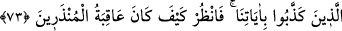
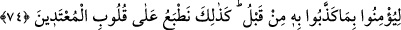

73. Yine de onu yalanladılar, Biz de onu ve onunla beraber gemide bulunanları
kurtardık. Onları halifeler yaptık ve âyetlerimizi yalanlayanları da boğduk. Bak
işte o uyarılanların sonu nice oldu!
“Yine de onu yalanladılar,” Yâni, onlara Nuh’un haberini oku. O, kavmine şunları
şunları söylemişti de yine de yoldan çıkıp inat ederek onu yalanlamakta ısrar ettiler,
azabın hükmü kendileri için gerçekleşti ve boğuldular. “Biz de onu ve onunla beraber
gemide bulunanları” -ki el-Bostan’da belirtildiğine göre onlar seksen kişiydiler-
boğulmaktan “kurtardık.” Ya da onları bu mekanda (gemide) kurtardık. Çünkü onların
kurtarılması olayı gemide vukû bulmuştur.
“Onları halifeler yaptık” Yani boğulup helâk olanların yerine yerleştirdik. Onları
yeryüzünün sâkinleri yaptık.
el-Bostan’da şöyle denilir: “Gemiden çıktıklarında Nuh’un Sam, Ham ve Yafes adlı
oğulları ile bunların hanımlarının dışındakilerin hepsi öldüler. Nitekim Cenab-ı Hak
şöyle buyurur: “Nuh’un zürriyetini bâki kıldık.” (es-Sâffât, 37/77) Nesilleri artıp
çoğaldılar. İşte Araplar, Acemler, Farslılar ve Rumlar Sam’ın oğullarından; Habeşliler,
Sindliler ve Hindliler Ham’ın oğullarından; Ye’cûc, Me’cûc, Slavlar ve Türkler de
Yafes’in oğullarındandır.
“ve âyetlerimizi yalanlayanları da” tufanla “boğduk.”
Üftâde Hazretleri der ki: “Nuh Tûfânı’nın tesiri, her otuz senede bir ortaya çıkar,
fakat hafif olarak. Tûfanın tesiri ortaya çıkınca çok yağmur yağar, bazı evler ve
kasabalar selden sular altında kalır.”
“Bak işte o uyarılanların sonu nice oldu!” Bu uyarılanlar, Nuh kavmidir. Bu ifâdede
Hz. Peygamber (s.a.)’i yalanlayanlara bir uyarı, Hz. Peygamber (a.s.)’a ise teselli
vardır.
Madem ki dost seni muhâfaza eder
Düşmanın sana zarar vermesi muhaldir
74. Sonra onun ardından bir çok peygamberi kendi toplumlarına gönderdik, onlara
mûcizeler getirdiler. Fakat onlar önce yalanladıkları şeylere inanacak değillerdi.
İşte biz, haddi aşanların kalplerini böyle mühürleriz.